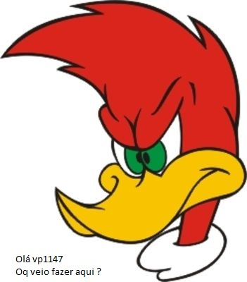

█████████ █▄█████▄█ █▼▼▼▼▼ █ telefone! █▲▲▲▲▲ █████████ ██ ██

A ignorância gera mais frequentemente confiança do que o conhecimento: são os que sabem pouco, e não aqueles que sabem muito, que afirmam de uma forma tão categórica que este ou aquele problema nunca será resolvido pela ciência.
sou lindo